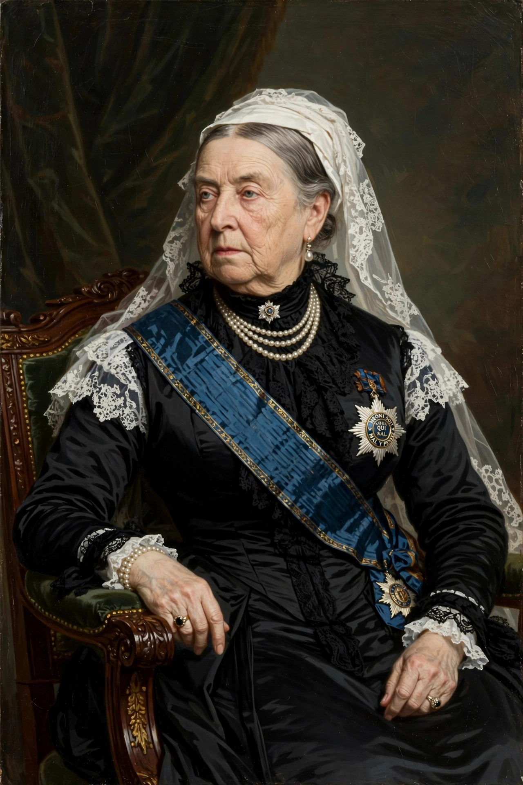

Victoria (Alexandrina Victoria; 24 May 1819 – 22 January 1901) was Queen of the United Kingdom of Great Britain and Ireland from 20 June 1837 until her death, and Empress of India from 1876. Her reign of 63 years and seven months — the Victorian era — was the longest of any British monarch until surpassed by Elizabeth II in 2015. It encompassed the Industrial Revolution at its height, the vast expansion of the British Empire, and major political reform.
| Victoria | |
|---|---|
| Reign | 20 June 1837 – 22 January 1901 |
| Born | 24 May 1819, Kensington Palace, London |
| Died | 22 January 1901, Osborne House, Isle of Wight |
| Spouse | Prince Albert of Saxe-Coburg and Gotha (m. 1840; d. 1861) |
| Issue | Nine children, including Edward VII; her descendants married into most European royal houses — the "grandmother of Europe" |
| House | Hanover |
Victoria was the daughter of Prince Edward, Duke of Kent, fourth son of George III. Raised at Kensington Palace under her mother the Duchess of Kent and the comptroller Sir John Conroy in the restrictive "Kensington System", she succeeded her uncle William IV at eighteen. Her first prime minister, Lord Melbourne, became a trusted mentor. In 1840 she married her first cousin Prince Albert of Saxe-Coburg and Gotha; they had nine children, and Albert became her indispensable adviser.
Victoria survived at least eight assassination attempts and the pressures of an expanding democracy: the Reform Acts of 1867 and 1884 steadily widened the electorate while real political power shifted toward Parliament and the prime minister. She was closely associated with the Great Exhibition of 1851, Albert's triumph. After Albert's death from typhoid in December 1861 she withdrew into mourning and semi-seclusion for years, wearing black for the rest of her life — a withdrawal that fuelled republican criticism until her gradual return to public life. The title Empress of India (1876), promoted by Disraeli, marked the empire's centrality to her later reign, celebrated in the Golden (1887) and Diamond (1897) Jubilees.

[ IMAGE: Portrait of Queen Victoria in later life — white widow's cap and veil, black dress with the sash of the Order of the Garter, seated, after the well-known state portraits. ] Victoria in widowhood, the image by which the era is rememberedVictoria died at Osborne House on 22 January 1901 and was succeeded by her son Edward VII. Her 63-year reign gave its name to an age of industrial confidence, moral earnestness and imperial power — and her nine children and 42 grandchildren linked the royal houses of Germany, Russia, Spain, Scandinavia and Britain, with consequences that ran into the First World War.
Victorian era · Prince Albert of Saxe-Coburg and Gotha · British Empire · Crimean War
Categories: Queen Victoria · British monarchs · House of Hanover